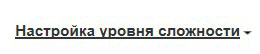
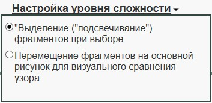
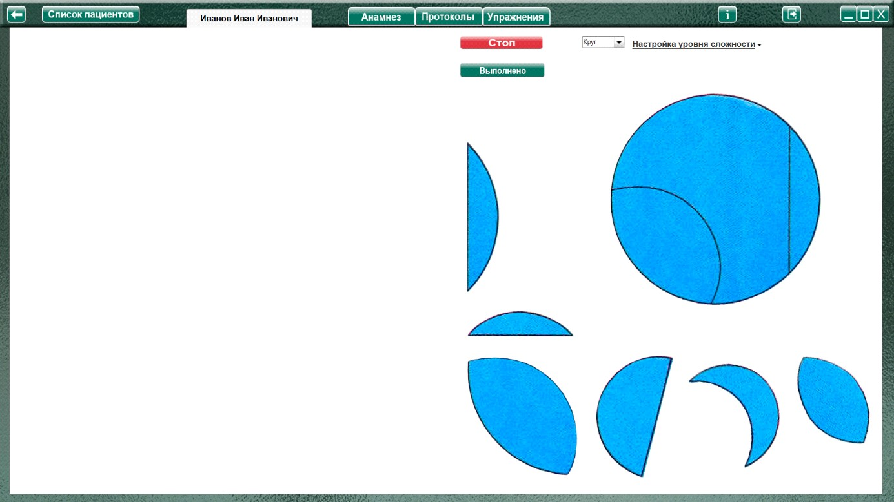

Методика " Найди что вырезали " (Забрамная С.Д., Боровик О.В.)
Методика " Найди что вырезали " (Забрамная С.Д., Боровик О.В.) описание
Процедура проведения.
Перед ребенком кладут таблицу и говорят: «Посмотри, из круга (квадрата, треугольника) вырезали кусочек. Найди его среди тех, которые здесь нарисованы». Если ребенок не понимает, ему показывают правильное решение. Остальные задания он должен выполнить сам. В более сложном варианте у фигур отсутствуют вырезанные из них части. Ребенок должен выполнить задание на
уровне наглядно-образного мышления.
Анализируемые показатели и нормативы выполнения
Дети с нормальным умственным развитием проявляют выраженный интерес к заданию. В 6 лет оно им посильно, хотя качество выполнения не одинаково (некоторым нужна организующая помощь).
У детей с задержкой психического развития отмечается бессистемность и не целенаправленность в работе. При организующей помощи задание эти дети выполняют.
Умственно отсталые дети в этом возрасте задание не понимают. Помощь в виде разъяснения и показа выполнения неэффективна.
Оценка результатов
Характер деятельности ребенка:
Виды возможной помощи:
Стимулирующая помощь
Направляющая помощь:
Обучающая помощь:
Протокол фиксации результатов исследования
_________________________________ _______________
ФИО Дата рождения
Методика |
Найди что вырезали |
Автор методики (адаптации, модификации) |
Забрамная С.Д., Боровик О.В. |
Цель: |
Выявить сформированность целостного восприятия; наглядно-образного мышления; способность решать задания в умственном плане. |
Дата / специалист |
|
Результат: вывод об уровне развития |
|
Примечание |
|
Процесс выполнения диагностической методики |
|
Фигура |
Факт выполнения / Время |
Характер деятельности ребенка |
Виды помощи |
Круг |
|||
Квадрат |
|||
Пирамида |
Логика заполнения протокола
Заполняется автоматически
Имя специалиста – логин при входе в программу.
Дата – дата и время прохождения упражнения в формате дд.мм.гггг. чч:мм
/ Время - время, затраченное на прохождения задания.
Ячейки «Характер деятельности ребенка», «Виды помощи», «Факт выполнения» заполняются в зависимости от выбора специалиста в поле «Оценка результатов» либо самостоятельно.
Остальные ячейки заполняются (правятся) специалистом самостоятельно.
Элементы управления настройкой и выполнением упражнения.
Меню настройка уровня сложности


При нажатии открывает окно, для выбора настроек необходимого уровня сложности
В этом упражнении по умолчанию включен!
При установке чекбокса в данном пункте, при начале упражнения (или во время) выбранные фрагменты становятся «подсвеченными»
По умолчанию выключен!
При установке чекбокса в данном пункте, при начале (или во время) упражнения выбранный фрагмент можно переместить на основную фигуру для визуального примеривания.
Выполнение упражнения

Выбрать в меню задание, и нажать кнопку «Начать упражнение» (запуская секундомер, и открывая задание на весь экран)
Выполнить задание согласно пункту «Процедура проведения». Ребенок должен выбрать фрагменты, «вырезанные» из круга (квадрата, треугольника) либо выделением (кликнуть по нужному фрагменту левой кнопкой мыши), либо перенести нужные элементы на «свои» места на фигуре (в зависимости от настроек, выбранных специалистом).
По окончании выполнения нажать кнопку «Стоп», открывая поле оценки результата. Только после формирования протокола по заданию можно перейти к продолжению выполнения упражнения!